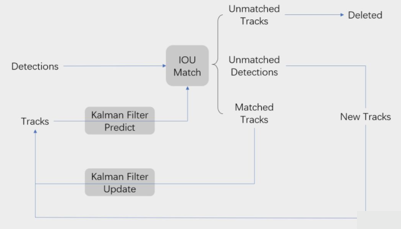
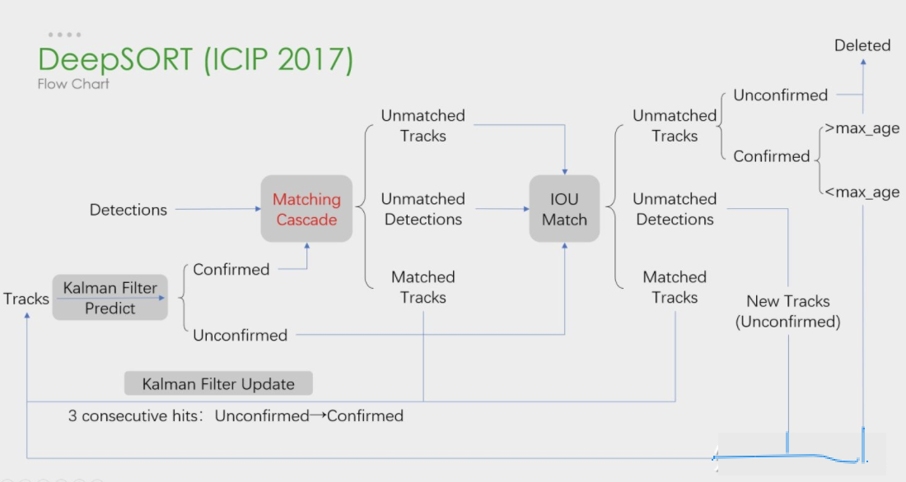
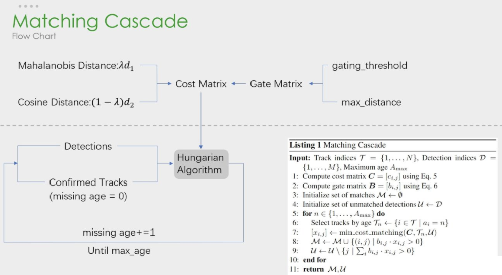

3.8. SORT/deepSORT
学习目标：
- 理解SORT算法的原理
- 理解DeepSORT算法的原理
上一节给大家介绍了一下多目标跟踪MOT的一些基础知识。SORT和DeepSORT是多目标跟踪中两个知名度比较高的算法。DeepSORT是原团队对SORT的改进版本。现在来解析一下SORT和DeepSORT的基本思路。
1.SORT
SORT核心是卡尔曼滤波和匈牙利匹配两个算法。流程图如下所示，可以看到整体可以拆分为两个部分，分别是匹配过程和卡尔曼预测加更新过程，都用灰色框标出来了。

关键步骤：轨迹卡尔曼滤波预测→ 使用匈牙利算法将预测后的tracks和当前帧中的detecions进行匹配（IOU匹配） → 卡尔曼滤波更新
卡尔曼滤波分为两个过程：预测和更新。SORT引入了线性速度模型与卡尔曼滤波来进行位置预测，先进行位置预测然后再进行匹配。运动模型的结果可以用来预测物体的位置。
匈牙利算法解决的是一个分配问题，用IOU距离作为权重（也叫cost矩阵），并且当IOU小于一定数值时，不认为是同一个目标，理论基础是视频中两帧之间物体移动不会过多。在代码中选取的阈值是0.3。scipy库的linear_sum_assignment都实现了这一算法，只需要输入cost_matrix即代价矩阵就能得到最优匹配。
2.DeepSort
DeepSORT是SORT的续作，整体框架没有大改，还是延续了卡尔曼滤波加匈牙利算法的思路，在这个基础上增加了鉴别网络Deep Association Metric。
下图是deepSORT流程图，和SORT基本一样，就多了级联匹配（Matching Cascade）和新轨迹的确认（confirmed）。

关键步骤：轨迹卡尔曼滤波预测→ 使用匈牙利算法将预测后的tracks和当前帧中的detecions进行匹配（级联匹配和IOU匹配） → 卡尔曼滤波更新
级联匹配流程图如下所示：

其中上半部分就是相似度估计，也就是算这个分配问题的代价函数。下半部分依旧使用匈牙利算法进行检测框和跟踪框的匹配。
总结：
1.SORT算法
SORT是利用强大的CNN检测器的检测结果来进行多目标跟踪使用基于卡尔曼滤波（Kalman filter）与匈牙利算法（Hungarian algorithm）的方法来进行跟踪。
2.deepSORT算法
DeepSORT是在SORT基础上进行的修改，增加了级联匹配和目标的确认，还是使用卡尔曼滤波加匈牙利算法进行目标跟踪。